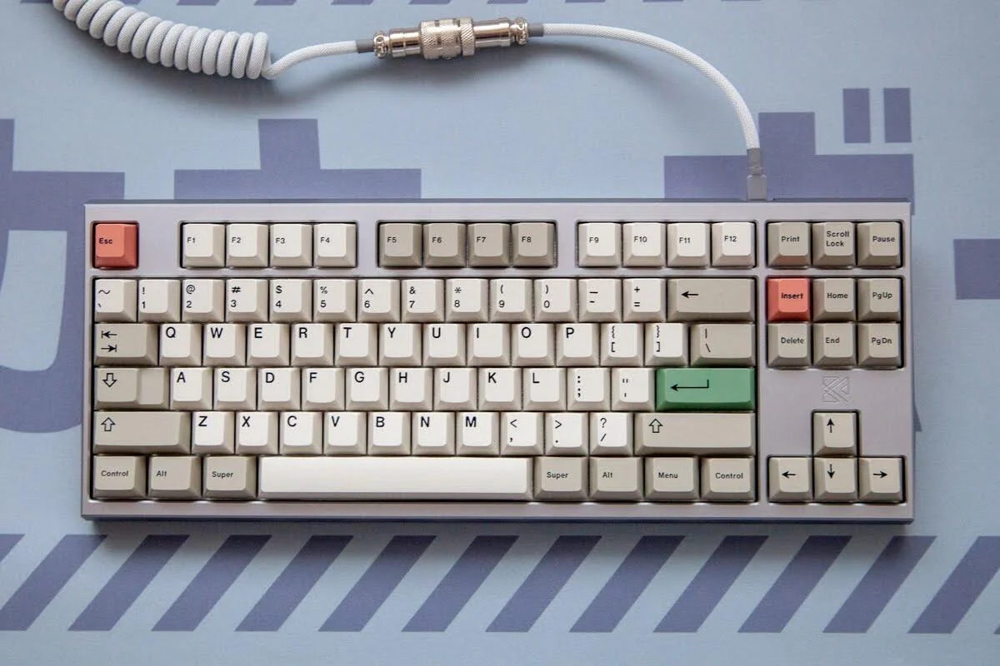

|  | A computer keyboard is a peripheral input device modeled after the typewriter keyboard which uses an arrangement of buttons or keys to act as mechanical levers or electronic switches. Replacing early punched cards and paper tape technology, interaction via teleprinter-style keyboards have been the main input method for computers since the 1970s, supplemented by the computer mouse since the 1980s. |
Keyboard keys (buttons) typically have a set of characters engraved or printed on them, and each press of a key typically corresponds to a single written symbol. However, producing some symbols may require pressing and holding several keys simultaneously or in sequence.[3] While most keys produce characters (letters, numbers or symbols), other keys (such as the escape key) can prompt the computer to execute system commands. In a modern computer, the interpretation of key presses is generally left to the software: the information sent to the computer, the scan code, tells it only which physical key (or keys) was pressed or released. |
|